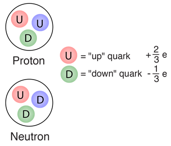

Day 16 - Conservation of Linear and Angular Momentum#

Announcements#
Midterm 1 is due Oct 10th
Friday’s class: Midterm 1 Work Time \(\longleftarrow\) Take advantage of it!
There will be no office hours on Oct 3rd (DC traveling)
Seminars this week#
WEDNESDAY, October 1, 2025#
Astronomy Seminar, 1:30 pm, 1400 BPS, In Person and Zoom, Host~ Speaker: Madison Brady, MSU Title: Zoom Link: https://msu.zoom.us/j/93334479606?pwd=OtIXPWhRPBfzYu53sl3trSJlaBYI7C.1 Meeting ID: 933 3447 9606 Passcode: 825824
Seminars this week#
THURSDAY, October 2, 2025#
Colloquium, 3:30 pm, 1415 BPS, in person and zoom. Host ~ Witold Nazarewics Refreshments and social half-hour in BPS 1400 starting at 3 pm Speaker: David Dean, Thomas Jefferson National Accelerator Facility Title: From the quarks to the cosmos Background: For more information and to schedule time with the speaker, see the colloquium calendar at https://pa.msu.edu/news-events-seminars/colloquium-schedule.aspx Zoom Link: https://msu.zoom.us/j/94951062663 Password: 2002
Seminars this week#
FRIDAY, October 3, 2025#
Special Seminar, 10:00am, In Person Only, FRIB 1300 Auditorium Speaker: Sudip Bhattacharyya - Tata Institute of Fundamental Research & Massachusetts Institute of Technology Title: Thermonuclear X-ray bursts: probing neutron stars and a double-photospheric-radius-expansion Sign up to meet with Dr. Bhattacharyya (enter your name and meeting location): https://docs.google.com/spreadsheets/d/1tlw765Lf8mNOeCUJp8cWfSOvQfiF4vJDOuhKKVPXH1M/edit?usp=sharing
Seminars this week#
FRIDAY, October 3, 2025#
QuIC Seminar, 12:30pm, -1:30pm, 1300 BPS, Zoom only Speaker: Balint Pato, Duke University Title: Compass codes in quantum error correction Full Scheule is at: https://sites.google.com/msu.edu/quic-seminar/ For more information, reach out to Ryan LaRose
This Week’s Goals#
Understand the concept of potential energy
Determine the equilibrium points of a system using potential energy
Analyze the stability of equilibrium points
Define and begin to apply conservation of linear and angular momentum
Reminders: Finding Equilibrium Points#
Given a potential energy function \(U(x)\), we can find the equilibrium points by setting the derivative of the potential energy function to zero:
The stability of the equilibrium points can be determined by examining the second derivative of the potential energy function:
If the second derivative is positive, the equilibrium point is stable. If the second derivative is negative, the equilibrium point is unstable.
Clicker Question 16-1#
Here’s the graph of the potential energy function \(V(x)\) that is a model of quark confinement in quantum chromodynamics.

What can you say about the equilibrium points? There is/are:
One stable point
One stable and one unstable point
Can’t tell
Clicker Question 16-2#
Here’s the equation for this potential energy function:
\(\gamma\), \(\delta\), and \(\kappa\) are constants.
What can you say about the motion of a particle with energy \(E\)?
\(E < 0\) \(\;\) 2. \(E = 0\) \(\;\) 3. \(E > 15\)
Careful with #3! Send \(x\) to \(\infty\): \(\lim_{x\to\infty} V(x) = ?\)
Clicker Question 16-3#
Consider the sum of internal forces on a system of two particles:
This sum is equal to:
\(2\vec{F}_{12}\)
\(-2\vec{F}_{12}\)
\(\vec{F}_{12}\)
\(0\)
???
Clicker Question 16-4#
In general the sum of internal forces on a system of \(N\) particles is:
This sum is always equal to:
\(2\sum_i\vec{F}_{i}\)
\(-2\sum_i\vec{F}_{i}\)
\(\infty\)
\(0\)
???
Clicker Question 16-5#
The change in the total angular momentum of a system of particles is given by:
There is no change in the total angular momentum of a system of particles when:
The net external torque on the system is zero.
The net external force on the system is zero.
The net internal force on the system is zero.
The net internal torque on the system is zero.
???
Clicker Question 16-6#
We derived that the change in the total angular momentum of a system of particles is given by:
What geometric relationship is there between the vectors \(\vec{r}_i - \vec{r}_j\) and \(\vec{F}_{ij}\) if the angular momentum of the system is conserved?
They are parallel.
They are perpendicular.
They are anti-parallel.
I can’t tell